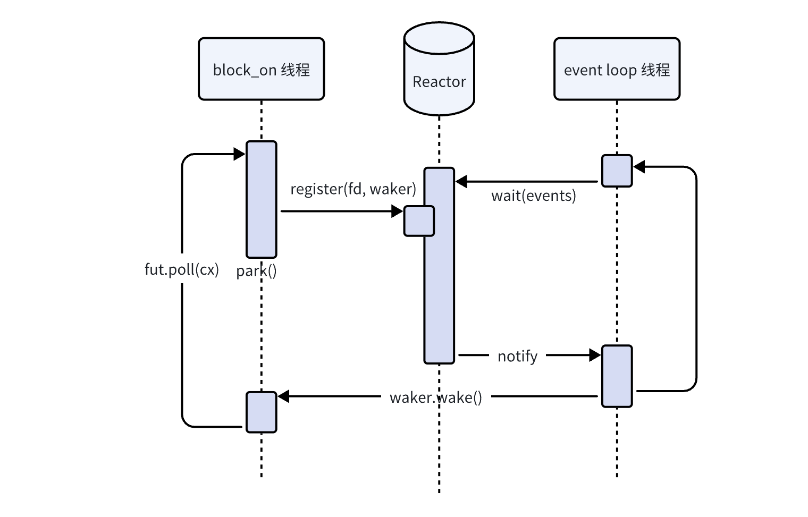

Reactor的设计
参考
我们借助polling库，来实现一个reactor，提供统一管理IO的注册、IO事件监听以及唤醒的功能。
基础的设计是：
- 有一个event loop不断监听注册在Reactor中的IO事件，当IO事件有响应时，调用对应的Waker
- 被
block_on求值的IO future，向Reactor注册IO事件（包括waker）

这里Reactor最简单提供两个接口，event_loop和register_readable：
#![allow(unused)] fn main() { // Reactor实例 pub struct Reactor { // Poller实例 poller: Poller, // 存储 repo: Mutex<Slab<Arc<IOEvent>>>, } // 代表一个IO struct IOEvent { fd: RawFd, key: usize, is_ready: AtomicBool, waker: AtomicWaker, } impl Reactor { // IO事件循环 // 当存在fd就绪时，调用注册的waker pub fn event_loop(&self) -> io::Result<()>; // 注册一个可读事件 // 当fd可读时返回 pub async fn register_readable(&self, fd: BorrowedFd<'_>) -> io::Result<()>; } }
先来看看event_loop的实现，其做的事情就是：
- 等待注册的IO就绪，
- 调用对应的waker
#![allow(unused)] fn main() { pub fn event_loop(&self) -> io::Result<()> { let mut events = Events::new(); loop { events.clear(); // 等待注册到poller的IO就绪 match self.poller.wait(&mut events, None) { Ok(0) => {}, Ok(_) => { let repo = self.repo.lock(); for ev in events.iter() { // 调用waker if let Some(event) = repo.get(ev.key) { event.waker.take().map(Waker::wake); event.is_ready.swap(true, Ordering::Release); } } Ok(()) } Err(err) if err.kind() == ErrorKind::Interrupted => {}, Err(err) => return Err(err), } } Ok(()) } }
然后这里的注册的代码，写为一个异步函数，也方便通过RAII的方式去反注册：
#![allow(unused)] fn main() { // 注册可读fd，直到fd就绪 pub async fn register_readable(&self, fd: BorrowedFd<'_>) -> io::Result<()> { // IO RAII struct IOGuard<'r> { reactor: &'r Reactor, event: Arc<IOEvent>, } impl<'r> IOGuard<'r> { // 构造FdGuard，并将fd注册到reactor中 fn new(reactor: &'r Reactor, fd: BorrowedFd<'_>) -> io::Result<Self> { let event = { let mut repo = reactor.repo.lock(); let entry = repo.vacant_entry(); let event = Arc::new(IOEvent { fd: fd.as_raw_fd(), key: entry.key(), is_ready: AtomicBool::new(false), waker: AtomicWaker::new(), }); entry.insert(event.clone()); event }; // fd注册到poller里 if let Err(err) = unsafe { reactor.poller.add(event.fd, Event::readable(event.key)) } { let mut repo = reactor.repo.lock(); repo.remove(event.key); return Err(err); } Ok(Self { reactor, event }) } } // 当完成或者取消时自动反注册 impl Drop for IOGuard<'_> { fn drop(&mut self) { let mut repo = self.reactor.repo.lock(); repo.remove(self.event.key); self.reactor .poller .delete(unsafe { BorrowedFd::borrow_raw(self.event.fd) }) .ok(); } } let io_guard = IOGuard::new(self, fd)?; poll_fn(|cx| { let event = &*io_guard.event; // 等待reactor唤醒并改变状态 if event.is_ready.load(Ordering::Acquire) { return Poll::Ready(Ok(())); } // 每次poll别忘记更新waker event.waker.register(cx.waker()); Poll::Pending }) .await } }
这个register_readable是用于IO future的实现的，这里仍然以stdin为例子：
#![allow(unused)] fn main() { // 异步的stdin pub struct Stdin<'r> { reactor: &'r Reactor, stdin: io::Stdin, } impl<'r> Stdin<'r> { pub fn new(reactor: &'r Reactor) -> io::Result<Self> { let this = Self { reactor, stdin: io::stdin(), }; // 设置为异步的IO， // 之后阻塞时通过Read::read返回的错误码为WouldBlock rustix::io::ioctl_fionbio(&this.stdin, true)?; Ok(this) } pub async fn read(&self, buf: &mut [u8]) -> io::Result<usize> { loop { // 尝试读stdin match self.stdin.lock().read(buf) { Err(err) if err.kind() == io::ErrorKind::WouldBlock => {} res => return res, } // 如果被阻塞则等待stdin就绪 self.reactor.register_readable(self.stdin.as_fd()).await?; } } } }
有了Reactor，我们就可以单独跑一个线程来管理多个IO的注册与唤醒了，到这里才能体现出异步在IO密集的应用上的优势。虽然和前面的stdin实现都创建了一个额外的线程处理IO事件，但这里可以同时处理多个不同类型的IO，实现了所谓的IO的“复用”。
#![allow(unused)] fn main() { let reactor = Reactor::new(); thread::scoped(|s| { // reactor io线程，用于处理IO事件 s.spawn(|| reactor.event_loop().unwrap()); // 其它线程拿到Reactor可以用于创建IO对象 s.spawn(|| { block_on(async { let mut buf = [0; 1000]; let mut buf = &mut buf[..]; let stdin = Stdin::new(reactor)?; while buf.len() > 0 { let x = stdin.read(buf).await?; println!("from stdin: {:?}", String::from_utf8_lossy(&buf[..x])); buf = &mut buf[x..]; yield_now().await; println!("yielding"); } println!("end"); Ok(()) }) }); }); }
注：其实reactor的事件循环可以和block_on的轮询集成到一个循环里，这样甚至不需要多开一个线程。通过向reactor里注册一个特定的fd，在waker里进行IO操作，可以唤醒reactor。